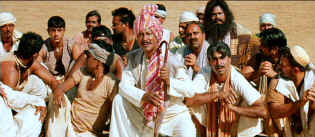

| Lagaan/ C,C+ |
| Columbia/2001/225/ANA 2.35 |
Lagaan is a big, clunky "Bollywood"
production (The Indian film industry produces huge numbers of films each
year pandering to local commercial audiences. The industry in general is
often referred to as Bollywood.) Set in late nineteenth century India as
the British Raj turns up the financial pressure in a Northwest province,
raising the lagaan, which is the tithe they take from the villages to
support the British government. Lagaan depicts a rather absurd
cricket match proposed by a British commander to determine whether or not
langaan will be paid for the next several years.
Typical to Bollywood productions, song and dance
numbers are integrated into the dramatic fabric of the production. The
theory is to give the audience a little bit of everything. If you are
going to taste of these films, you must accept this convention without
reservation. They're okay. The stylization is an acceptable convention.
For a film that features a holy hell of a lot of
cricket and is centered around a long drawn out cricket match, I didn't
feel I learned much about the sport. That was a disappointment. I
certainly did not come away with any respect for the game. It seemed
boring. I did think it was remarkable that the Indian team could even
compete against the Brits.
 |
|
A plea to cancel the lagaan.
©Columbia
|
The romantic stuff is mushier a bunch of month old
grapes sitting on the table in tropical heat. It was funny, very funny,
and I have to hope it was intended that way. The British captain Andrew
Russell is played so broadly by Paul Blackthorne that he could have been
mistaken for a refugee from a Monty Python fan club. The depiction of the
British officer is almost racist in its tone. Aamir Khan plays the central
role of Buvan with earnest emotion all over his face. Rachel Shelley is
hilarious as Elizabeth Russell, the captain's fair sister. No, I am not
going to break into song about the actors.
Lagaan really falls short in the acting
department. One performance seems stiffer than the next. The direction is
blatantly melodramatic. It could have been an early twentieth century
silent film with villains twirling mustaches and tying heroines to the
tracks. For me, the music was the highlight of the film. It didn't seem to
blend very well together with the images, but the beat was infectious.
Some element marking crops up on the DVD, including a few
scratches. Mostly, it's clean. The color saturation is quite agreeable.
There are some soft scenes and edge enhancement is obvious, especially in
high peak transitions. Shadow detail is okay and black levels are
adequate. Some twitter is in evidence suggesting that better filtering
during the transfer process might have helped. The Yellow English
subtitles are sharp and easy to read with a sensible translation. Single
lines are in the black letterbox area while double lines overlap the image
slightly. Several deleted or extended scenes are included. |
|
|
|
Looking for a good Foreign Film Fix?
Here's a list of reviews that can get you started on an overdose.
Click here to satisfy the urge.


BargainFlix doesn't sell movies! We just tell you where to get them
for the best price! DVD reviews, giveaways and more.

ISF Course Instructors Jim Burns and Kevin Miller are hosting the Digital Film Forum. Join
professionals and enthusiasts for lively home theater discussion.

DVD reviews for women
from a woman's point of view

Images is a non-commercial Web site created for everyone who enjoys movies
and popular culture. Images is published quarterly; however, new reviews
will appear each week, so check back often.

Excellent British based DVD review site that features Region 2 and
Region 1 releases. Check out their fine interviews as well.

"Products and services perfecting home theater"
ISF Calibrations in Colorado, 6500K monitor bias lighting.

ISF Monitor
Calibrations in the Tristate New York area. Lots of hardware
info and frequent hardware peaks from video expert Kevin Miller. They may
be judgmental, but that's the point, isn't it. Lots of DVD reviews plus
news and more.
|